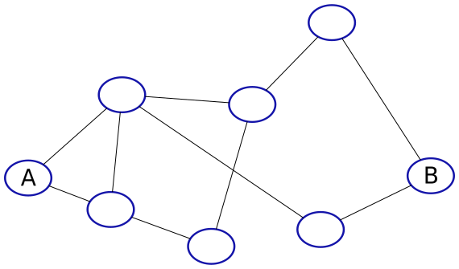

Articles
The Mesh Question
by real, 2014-11-09 18:31Abstract
We discuss motivation for creating a distributed network instead or on top of the internet. Then we write down a list of specific requirements from this network. Finally we introduce the Flooding idea as a naive solution for this problem, and explain why it won't do.
Motivation for change
In Intro to the Internet we generally discussed how the internet works, and some of the drawbacks of the current situation. I remind you the main ones:
-
Addressing - A usual participant in the internet usually has no control over his address. It is assigned to him. In most cases it also changes from time to time.
-
NATs - Most of the computers in the internet these days are behind a NAT. If two computers are each behind a NAT, they might experience great difficulty in the task of initiating conversation. (Though some ad hoc methods exist today today. See Stun as an example.)
-
Operators Greed - The Internet is hierarchical, which gives much power to its operators. They might be tempted to find new and interesting ways to get more money from the end users of the Internet.
-
Privacy and Censorship: The hierarchical structure of the internet causes a situation where much traffic is routed through few computers. The owners of those computers can leverage their advantage to read end users traffic or censor specific content.
The search for alternatives
While some work on solutions inside the Internet itself to solve some of the issues presented above, it might be interesting to discuss an alternative structure of connecting computers together.
The main idea proposed in this project is the creation of a new network with a different structure, that will serve the same purposes as the original Internet.
As many issues that we mentioned before relate to the hierarchial structure of the Internet, we will avoid it. We will try to find some other more decentralized structure, where all the computers have more or less a symmetric role in the network. This kind of network is sometimes referred to as a mesh network.
We will also want to utilize the current infrastructure of the Internet, as it is already there, and it works. One idea would be to start a new network on the Internet itself, and slowly take it out.
Next, we care about security. The Internet was built in the sixties and seventies, and its creators didn't expect it to be deployed on all the computers in the world. They didn't design it with security in mind - They just wanted it to work.
Finally, we want the new network to be efficient, or maybe - scalable. We want it to be able to connect all the computers in the world, and still have good performance. Performance that is comparable with today's Internet.
Isolating the question
We have a \(n\) computers scattered around the world. (Or maybe in some other places, it you like). \(n\) is a large number. You may assume \(n = 2^{40}\). We want to wire them somehow and choose a program that all of them run (The same program for all of them!), so that we get the following properties:
-
Addressing: We can give names or addresses to different computers on the network. Then those names could be used to initiate communications with remote computers on the network.
-
Routability: We are able to send messages to remote computers on the network, given their address. Those messages arrive with some constant high enough probability, in amount of time poly logarithmic in \(n\). (\(O(P(log n))\) where \(P\) is some non evil Polynomial).
-
Symmetry: All the computers in the network have the same role, or at least the potential to be in the same role. All the computers in the network run the same program.
-
Scalability: Sending a message in the network disturbs no more than \(P(log n)\) computers. Basically it means that routing a message in the network can not involve too many computers in the network.
-
Network Justice: A computer in the network that sends lots of data will not be able to disturb other computers in the network to send and receive messages. (Of course we will have to define somehow what is lots of data, though this is just a general idea of a property that we want).
-
Security: Given an adversary that has limited computing power and bandwidth, the network will keep working and all the participants will be able to continue their life in the network normally. (This is a bit vague, but we will discuss it in the future. It's hard to discuss security without having a system).
There are some other things that will be nice to have. We would like to be able to deal with Denial Of Service (DoS) in some way.
This description is far from perfect (It is not even close to being formal), though it is a start, and we can work with it at this point. As a summary, if somebody on the street asks you what I search for, it would be a secure distributed and scalable mesh network.
First Naive solution
Like every good researcher, we begin by trying a few simple solutions to the problem.
In all the following solutions we will begin by wiring every computer to a few computers close to him (Maybe geographically). We call those few computers close to him immediate neighbours, or just neighbours. Regarding the participants of the network - As they might be pretty general entities, we sometimes call them nodes instead of computers.
We will usually wonder how to send a message from some random node \(A\) to another random node \(B\) on the network, given that \(A\) knows the address of \(B\). (How \(A\) knows \(B\)'s address from the first place is another question that we are going to deal with later, don't worry about it now).

(A generic schema of a mesh network. We want to send a message from \(A\) to
\(B\).)
Flooding
We program every node (Computer) in the network to forward every message it gets to all of his neighbors.
To avoid loops, every node will remember the messages that it sees somehow, and if he gets again a message that he has already seen, he will not forward it again.
Let \(A,B\) be two nodes in the network. We want to send a message from \(A\) to \(B\). To do that, \(A\) will send the message to all of his neighbours. In turn, as we programmed all those nodes, every nodes that gets the message will forward it to all of his neighbours, and so on. Eventually the message will arrive at \(B\).
This solution will not be enough for us, because it is not scalable. Note that sending a message from \(A\) to \(B\) involves all the nodes in the network. This means that as a node sitting in this network, you will have to process every message that every node sends! This is too much for large amount of network participants.
Flooding is one of the oldest tricks in the book. Although it is considered to be not very scalable, it is a very common solution. (See for example bitcoin or Gnutella)
The Flooding solution has some features that are hard to achieve in other methods:
-
Flooding is very simple to design and program. No special rules, just forward every message to all of your neighbors.
-
Flooding manages to route a message to its destination with a very high probability. Also, almost any addressing scheme will work with flooding, as every message arrives at all the nodes in the network.
-
Flooding has important security features. For example: It is very hard for an adversary to block a node from recieving a message destined to him. (Bitcoin, for example, relies on this feature for its security).
Summary
We made some progress in defining the kind of network we want, and introduced the Flooding solution. We also explained why it will not be suitable as a solution to our problem.